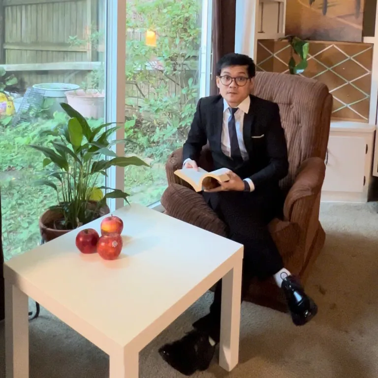

Mến chào quý độc giả cùng các em sinh viên,
Sau nhiều năm trải nghiệm nhiều nền giáo dục, học tập và làm việc tại các nước phát triển từ châu Á đến Bắc Mỹ. Tôi nhận nhận thấy môi tường xung quanh có rất nhiều cơ hội học tập, rèn luyện và phát triển bản thân. Tuy nhiên, số lượng sinh viên và đồng nghiệp đến từ Việt Nam luôn là rất ít so với bạn bè thế giới. Tôi ấp ủ xây dựng một nền tảng tập trung, nơi mọi người có thể tìm kiếm cũng như chia sẻ thông tin học bổng toàn phần, kinh nghiệm học thuật – nghiên cứu khoa học, cũng như tinh thần tương thân tương ái – hỗ trợ nhau trên trên chặn đường người Việt vươn tầm thế giới. Năm 2024, PhD.Hub ra đời với sứ mệnh này!
Ngoài ra, tôi thành lập PhD.Hub Foundation – nhằm hỗ trợ, tiếp sức cho những bạn trẻ Việt Nam có hoàn cảnh khó khăn nhưng giàu nghị lực và đam mê học tập. Với ngân sách từ cá nhân tôi, quỹ sẽ tài trợ cho các bạn học bổng khuyến học, cung cấp tài nguyên học thuật, trau dồi kỹ năng, và được hướng dẫn trực tiếp bởi tôi, để từ đó các bạn thay đổi số phận, vượt lên chính mình và vươn ra thế giới.
Hi vọng rằng, từ hệ sinh thái PhD.Hub, chúng ta có thể cùng nhau trải những bậc thang dù nhỏ nhưng bền vững, đưa nhiều ước mơ Việt vươn ra toàn cầu, góp phần cống hiến – xây dựng một đất nước Việt Nam ngày một giàu đẹp hơn.
Tiến sĩ Trần Quốc Thiện – Founder
Đại học Texas – Austin, Hoa Kỳ
TS. Thiện tốt nghiệp ĐH Bách Khoa Đà Nẵng (BKĐN) với song bằng Xây Dựng Cầu Đường (2015) và Kinh Tế Xây Dựng – Quản Lí Dự Án (2016). Năm 2017, anh nhận Học bổng toàn phần Thạc sĩ chuyên ngành Xây Dựng Dân Dụng tại ĐH Quốc Gia Chonnam, Hàn Quốc. Từ 2019 đến 2021, anh tham gia giảng dạy và làm việc tại Khoa Xây Dựng Cầu Đường, Đại học BKĐN trước khi sang Mỹ với học bổng toàn phần Thạc sĩ Khoa Học Vật liệu và Tiến Sĩ Xây Dựng Dân Dụng, tại ĐH Bách Khoa Virginia (xếp hạng chuyên ngành #7/5000, US News, 2021). Năm 2023, anh thành công bảo vệ luận án Tiến sĩ chỉ sau hơn 2 năm với đề tài nghiên cứu vật liệu low-carbon cementitious materials.
Hiện tại, anh đang làm nghiên cứu sau Tiến Sĩ tại ĐH Texas at Austin (xếp hạng chuyên ngành #3/5000, US News, 2024). Anh đã xuất bản gần 30 công trình Nghiên cứu khoa học uy tín về các loại vật liệu "xanh" trong xây dựng, góp phần giảm phát thải khí nhà kính và chống biến đổi khí hậu. Qua đó, anh cũng được mời phỏng vấn cho một số vị trí Giáo Sư (Assistant Professor) tại các trường ĐH xếp hạng R1, R2 tại Mỹ.
Website: Google Scholar
